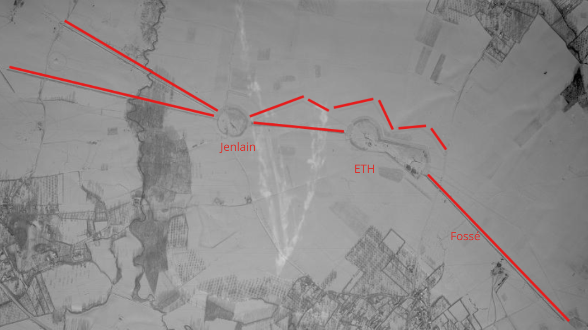

Le petit ouvrage d’infanterie d’ETH
L’ouvrage d’ETH est un petit ouvrage CORF composé de deux blocs de combat reliés par une galerie souterraine. Le bloc 1 constitue à la fois une casemate et l’entrée de l’ouvrage. Il est armé d’un créneau pour jumelage de mitrailleuses Reibel MAC 31 interchangeable avec un canon de 47 mm sur bi-rail, d’un second créneau pour jumelage de mitrailleuses Reibel MAC 31, d’une cloche AM et de deux cloches GFM type B, dont l’une équipée d’un périscope J2.
Le bloc 2 associe une casemate et une tourelle pour deux armes mixtes (2 AM). Il comprend un créneau pour jumelage de mitrailleuses Reibel MAC 31 interchangeable avec un canon de 47 mm sur bi-rail, un créneau pour jumelage de mitrailleuses Reibel MAC 31, une cloche GFM type B ainsi qu’un emplacement prévu pour une cloche lance-grenades qui ne sera finalement jamais installé.
Dans le cadre du second cycle de construction, l’ouvrage devait recevoir une entrée hommes, une entrée munitions ainsi qu’un bloc équipé d’une tourelle de 75 mm. Aucun de ces trois blocs ne sera finalement réalisé.
Le petit ouvrage est relié à la casemate de JENLAIN par la galerie de l’égout. Le plan de masse est arrêté en juin 1934 et le plan d’implantation général validé le 6 décembre 1934. Le marché de construction est attribué le 21 novembre 1934 pour un montant de 7 580 000 francs correspondant au gros œuvre.
Les plans techniques des locaux souterrains, datés du 24 janvier 1935, sont approuvés le 8 mars 1935 par la DM 1664 2/4-S. Cette rapidité de validation s’explique par les efforts de standardisation entrepris entre les différents ouvrages du secteur, les remarques formulées lors des études des premiers ouvrages étant directement intégrées aux projets suivants.
Le plan d’implantation particulier et le dossier technique du bloc 1 sont émis le 19 décembre 1934 par la DTF de Valenciennes. Plusieurs modifications sont demandées lors de l’examen du projet : l’ajout d’un créneau FM à la cloche GFM gauche orienté vers le village d’Eth afin de permettre au chef de bloc d’assurer la surveillance dans cette direction sans mobiliser la GFM droite prioritairement destinée à l’observation d’artillerie ; la modification de l’entrée du bloc dans le même esprit que les changements imposés à BERSILLIES ; la réduction maximale des dimensions des locaux ; la suppression du fossé diamant protégeant la face d’entrée pour des raisons économiques ; ainsi que l’indépendance entre le sas d’accès à l’ouvrage et celui du bloc. Après intégration de ces modifications, le projet est approuvé par la DM 1814 2/4-S du 13 mars 1935.
Le plan d’implantation particulier et le dossier technique du bloc 2 sont émis le 6 février 1935. L’examen du projet entraîne plusieurs demandes de modifications : le déplacement vers la droite et le rehaussement de la cloche GFM afin d’améliorer les vues au-dessus de la tourelle ; une rotation de 90° des substructures de la tourelle permettant de réduire les dimensions du bloc ; le positionnement du créneau antichar du côté opposé à l’orillon avec un décalage de 5° vers la gauche afin de réduire l’angle mort devant la tourelle ; enfin, le déplacement du créneau JM de 5° vers la droite afin d’obtenir une couverture totale de 55°. Sous réserve de ces modifications, le projet est approuvé par la DM 2404 2/4-S du 29 mars 1935.
Les travaux sur le terrain ne débutent réellement qu’en mars 1935, l’hiver ayant été consacré à la préparation du chantier. Le marché de fourniture et de montage de l’usine est approuvé le 4 août 1935 puis signé le 28 décembre 1935. Celui concernant les installations électriques est approuvé le 29 juillet 1936 et signé le 18 novembre 1936. Enfin, le marché relatif à la ventilation est approuvé le 26 août 1936 puis signé le 28 décembre 1936. Ces trois marchés d’équipement sont communs à l’ensemble des ouvrages des nouveaux fronts du Nord.
À la fin du mois de juin 1937, l’ouvrage est considéré comme achevé à 95 %. Le gros œuvre est terminé, y compris les aménagements de surface et le réseau de barbelés. Cent treize lits sont installés, ainsi que la majorité des portes et huisseries, à l’exception de la porte coupe-feu des réservoirs de l’usine. Les cloches blindées sont en place mais la tourelle pour deux armes mixtes doit encore être installée au cours du mois de juillet. Les trémies FM manquent également.
Les travaux de ventilation et de télécommunications ont commencé tandis que les deux monte-charges ne sont pas encore livrés. Aucune arme n’est encore en place, mais les créneaux pourront les recevoir dès l’achèvement de la ventilation prévu pour la fin août. L’achèvement complet de l’ouvrage est alors estimé au 1er octobre 1937.
L’effectif de l’ouvrage est principalement issu de la 106e compagnie d’équipage d’ouvrage du 54e régiment d’infanterie de forteresse. La garnison se compose de 5 officiers et de 134 hommes. Le commandement est assuré par le capitaine SAUDO puis, à partir du 8 mai 1940, par le capitaine DUBOS qui commande également la 106e CEO. Le lieutenant DUQUESNOY est officier adjoint, le lieutenant DOUTRIAUX du 161e RAP assure les fonctions d’observateur J2, le lieutenant SORLIN commande le bloc 1 et le lieutenant DUPAS le bloc 2.

Source : © IGN – Remonter le temps – Photographie aérienne historique, mission 2706-0031, janvier 1940.
L’ouvrage sous le feu
À partir du 20 mai 1940, l’ouvrage d’ETH se retrouve progressivement isolé alors que les dernières unités françaises refluent depuis la Belgique sous la pression allemande. Dans la soirée, d’importantes colonnes blindées ennemies empruntent déjà la route Bavay–Jenlain située à l’arrière de l’ouvrage. La tourelle pour deux armes mixtes du bloc 2 intervient alors contre plusieurs regroupements de véhicules et parvient à disperser les convois observés. Durant la nuit, les réseaux défensifs entourant l’ouvrage sont piégés à la grenade par l’adjudant-chef LEBEN afin de ralentir toute tentative d’approche ennemie.
Le 21 mai demeure relativement calme, malgré le passage continu des colonnes allemandes dans le secteur. Des interceptions radio laissent même penser que les Allemands croient l’ouvrage abandonné. Dans la soirée, les derniers contacts sont établis avec le 54e RIF avant le repli des unités françaises derrière l’Escaut.
Dans la soirée du 22 mai, l’ennemi met en batterie plusieurs pièces d’artillerie près du carrefour des routes Jenlain–Bavay et Wargnies–Villers-Pol. Après des tirs fumigènes destinés à masquer leur installation, des canons de 88 mm — ou de 105 mm selon certaines sources — ouvrent le feu directement sur la chambre de tir du bloc 2 afin de détruire les embrasures. La tourelle doit rester éclipsée pour éviter d’exposer sa muraille aux tirs directs. Les défenseurs souffrent également de l’absence des supports de mortiers de 50 mm prévus pour les cloches, ce qui les prive d’un moyen efficace de contrebattre les pièces allemandes installées à courte distance. Un montage improvisé est réalisé en urgence par les personnels du SEM de l’ouvrage, mais il ne pourra être utilisé efficacement avant la neutralisation de la cloche concernée.
Au cours de cette même soirée, une première attaque d’infanterie allemande est lancée contre le bloc 2 mais elle est facilement repoussée. Les positions d’ETH, de JENLAIN et de TALANDIER continuent alors à se soutenir mutuellement par des tirs de couverture et de harcèlement durant toute la nuit.
Le 23 mai, les Allemands installent un poste d’observation dans le bloc MIMOSA afin de surveiller les mouvements du bloc 2, mais celui-ci est rapidement réduit au silence par les tirs français. Plus tard dans la journée, deux canons allemands de 88 mm prennent position à la sortie nord de Jenlain afin de tirer directement sur la casemate voisine. L’une des pièces se découvre légèrement en se déplaçant et est aussitôt détruite par les tirs de l’arme mixte de la cloche nord de la casemate, appuyée par plusieurs rafales de mitrailleuses et des obus de 25 mm. Une nouvelle attaque d’infanterie allemande est ensuite repoussée.
Le 24 mai, les bombardements directs contre le bloc 2 reprennent avec violence. Les impacts provoquent l’éclatement du béton en surface et obligent les défenseurs à évacuer les munitions de 47 mm stockées dans la chambre de tir afin d’éviter une explosion catastrophique. Dans le même temps, une attaque allemande contre la casemate de TALANDIER est stoppée grâce aux tirs de sa tourelle pour armes mixtes.
Le 25 mai reste relativement calme durant la journée, mais les tirs reprennent en soirée entre 19 h et 21 h, aggravant encore les dégâts déjà subis par le bloc 2.
Le 26 mai 1940 marque l’assaut final contre l’ouvrage. En plus des pièces déjà installées au lieu-dit du PHILANTHROPE, quatre nouveaux canons allemands prennent position à la sortie nord de Wargnies et concentrent leurs tirs sur ETH et la casemate de JENLAIN. Vers 7 heures du matin, la façade du bloc 2 est finalement percée ; l’adjudant-chef Léon RUP est tué par des éclats à la tête. Le bloc est alors abandonné, ne laissant qu’un garde à son accès pendant que les fumées d’explosion envahissent les galeries souterraines.
Progressivement, toutes les armes du bloc 1 sont neutralisées. Une cloche GFM est littéralement décapotée sous les tirs ennemis, tandis que les autres cloches et la caponnière d’entrée cessent également de combattre. L’atmosphère devient irrespirable malgré l’utilisation des masques et des dispositifs de protection contre le monoxyde de carbone. Dans le même temps, l’infanterie allemande prend pied sur les dessus de l’ouvrage.
Face à une situation devenue sans issue, le capitaine DUBOS ordonne l’évacuation de l’ouvrage par la galerie de l’égout reliant ETH à la casemate de JENLAIN. À 10 h 26, les défenseurs cessent le combat et se rendent. Les prisonniers sont ensuite contraints de traverser les réseaux piégés malgré les avertissements des officiers français, provoquant l’explosion de plusieurs grenades et blessant grièvement le lieutenant DUQUESNOY ainsi que le sous-lieutenant DUPAS.
Après la reddition d’ETH, le capitaine DUBOS et le lieutenant SORLIN sont conduits à la casemate de TALANDIER afin de négocier la capitulation de cette dernière position encore en résistance. Celle-ci cesse finalement le combat vers midi. Les équipages sont ensuite envoyés en captivité tandis que les blessés sont évacués vers les hôpitaux du Quesnoy et d’Avesnes.
Sources : IGN – Wikimaginot